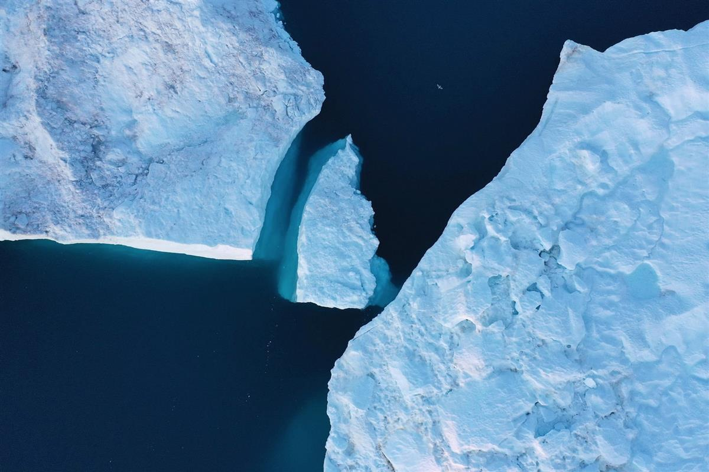

A fracking rig in the US. Photograph: grandriver/Getty Images
A fracking rig in the US. Photograph: grandriver/Getty Images
How the world’s dirtiest industries have learned to pollute our politics
The fossil-fuel lobby is threatened by public concern over the climate crisis. So it’s buying influence to get the results it wants
Wed 7 Aug 2019 06.00 BST Last modified on Wed 7 Aug 2019 07.29 BST
SOURCE: THE GUARDIAN
The tragedy of our times is that the gathering collapse of our life support systems has coincided with the age of public disservice. Just as we need to rise above self-interest and short-termism, governments around the world now represent the meanest and dirtiest of special interests. In the United Kingdom, the US, Brazil, Australia and many other nations, pollutocrats rule.
The Earth’s systems are breaking down at astonishing speed. Wildfires roar across Siberia and Alaska – biting, in many places, deep into peat soils, releasing plumes of carbon dioxide and methane that cause more global heating. In July alone, Arctic wildfires are reckoned to have released as much carbon into the atmosphere as Austria does in a year: already the vicious twister of climate feedbacks has begun to turn.
Torrents of meltwater pour from the Greenland ice cap, sweltering under a 15C temperature anomaly. Daily ice losses on this scale are 50 years ahead of schedule: they were forecast in the climate models for 2070. A paper in Geophysical Research Letters reveals that the thawing of permafrost in the Canadian High Arctic now exceeds the depths of melting projected by scientists for 2090.
In the US, legislators in 18 states have put forward bills criminalising protests against pipelines
While record temperatures in Europe last month caused discomfort and disruption, in south-west Asia they are starting to reach the point at which the human body hits its thermal limits. Ever wider tracts of the world will come to rely on air conditioning, not only for basic comfort but also for human survival: another feedback spiral, as air conditioning requires massive energy use. Those who cannot afford it will either move or die. Already, climate breakdown is driving more people from their homes than either poverty or conflict, while contributing to both these other factors.
A recent paper in Nature shows that we have little hope of preventing more than 1.5C of global heating unless we retire existing fossil fuel infrastructure. Even if no new gas or coal power plants, roads and airports are built, the carbon emissions from current installations are likely to push us past this threshold. Only by retiring some of this infrastructure before the end of its natural life could we secure a 50% chance of remaining within the temperature limit agreed in Paris in 2015. Yet, far from decommissioning this Earth-killing machine, almost everywhere governments and industry stoke its fires.
The oil and gas industry intends to spend $4.9tn over the next 10 years, exploring and developing new reserves, none of which we can afford to burn. According to the IMF, every year governments subsidise fossil fuels to the tune of $5tn – many times more than they spend on addressing our existential predicament. The US spends 10 times more on these mad subsidies than on its federal education budget. Last year, the world burned more fossil fuels than ever before.

Icebergs near Ilulissat, Greenland, in August 2019. Photograph: Sean Gallup/Getty Images
An analysis by Barry Saxifrage in Canada’s National Observer shows that half the fossil fuels ever used by humans have been burned since 1990. While renewable and nuclear power supplies have also risen in this period, the gap between the production of fossil fuels and low-carbon energy has not been narrowing, but steadily widening. What counts, in seeking to prevent runaway global heating, is not the good things we start to do, but the bad things we cease to do. Shutting down fossil infrastructure requires government intervention.
But in many nations, governments intervene not to protect humanity from the existential threat of fossil fuels, but to protect the fossil fuel industry from the existential threat of public protest. In the US, legislators in 18 states have put forward bills criminalising protests against pipelines, seeking to crush democratic dissent on behalf of the oil industry. In June, Donald Trump’s administration proposed federal legislation that would jail people for up to 20 years for disrupting pipeline construction.
Global Witness reports that, in several nations, led by the Philippines, governments have incited the murder of environmental protesters. The process begins with rhetoric, demonising civil protest as extremism and terrorism, then shifts to legislation, criminalising attempts to protect the living planet. Criminalisation then helps legitimise physical assaults and murder. A similar demonisation has begun in Britain, with the publication by a dark money-funded lobby group, Policy Exchange, of a report smearing Extinction Rebellion. Like all such publications, it was given a series of major platforms by the BBC, which preserved its customary absence of curiosity about who funded it.
Secretly funded lobby groups – such as the TaxPayers’ Alliance, the Adam Smith Institute and the Institute of Economic Affairs – have supplied some of the key advisers to Boris Johnson’s government. He has also appointed Andrea Leadsom, an enthusiastic fracking advocate, to run the department responsible for climate policy, and Grant Shapps – who until last month chaired the British Infrastructure Group, which promotes the expansion of roads and airports – as transport secretary. Last week the Guardian revealed documents suggesting that the firm run by Johnson’s ally and adviser Lynton Crosby has produced unbranded Facebook ads on behalf of the coal industry.
What we see here looks like the denouement of the Pollution Paradox. Because the dirtiest industries attract the least public support, they have the greatest incentive to spend money on politics, to get the results they want and we don’t. They fund political parties, lobby groups and thinktanks, fake grassroots organisations and dark ads on social media. As a result, politics comes to be dominated by the dirtiest industries.
We are told to fear the “extremists” who protest against ecocide and challenge dirty industry and the dirty governments it buys. But the extremists we should fear are those who hold office.
SOURCE: THE GUARDIAN